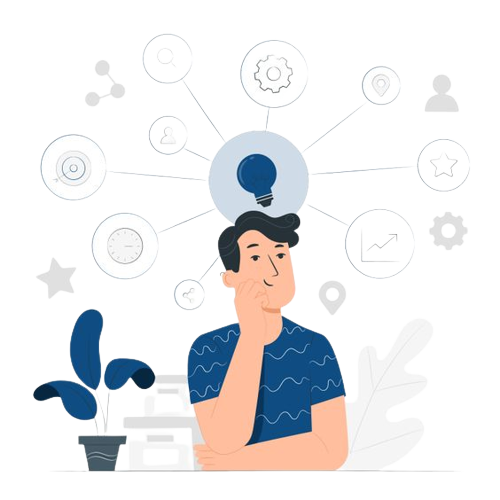
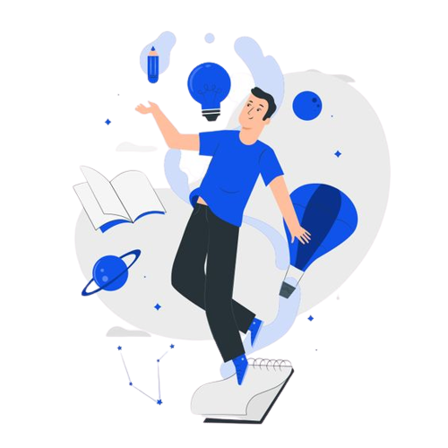

Apa itu NgupaApp?
NgupaApp merupakan aplikasi yang memudahkan para pelaku usaha dibidang makanan dan kuliner untuk dapat memperoleh bahan pokok yang dibutuhkan, langsung dari para penghasil maupun lewat satu distributor saja. Selain itu, aplikasi ini juga memberikan kemudahan kepada para pelaku dibidang pertanian dan kelautan untuk menjual hasilnya dengan harga yang sesuai dengan harga pasar.
Kenapa NgupaApp?
Gratis

Terpercaya

Terbarukan